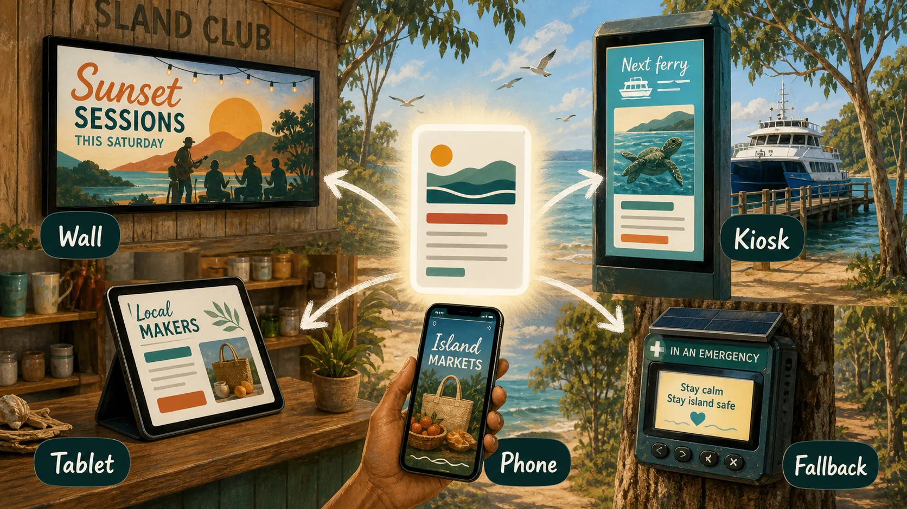

Stepping stones, not the hero
Build Path
Local projects are not the main moonshot on this site. They are the grounded steps, tests and public interfaces that help the far-out civilisation story earn contact with reality.
Practical surface
A civilisation path can start as a notice.
The noticeboard network is one example of a local build step: wall, tablet, phone, kiosk and emergency fallback. Useful now, expandable later.

Local project lane
Grounded projects and workbenches.
These are not presented as moonshots. They are practical stepping stones, public prototypes, or private workbenches that may support the long build.
Project currents
More grounded work feeding the far-out build.
These currents are practical enough to organise around but still belong under the moonshot: local capital, daily apps, culture hubs and governance structures that help the larger system earn trust.
Local prototype pages